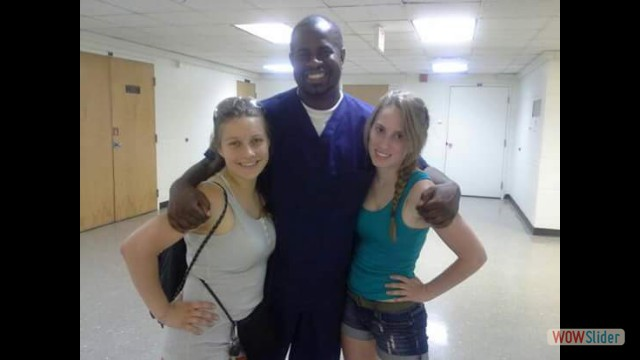

- 


 2
2 3
3 4
4 6
6 7
7 8
8 9
9 10
10 11
11 12
12 14
14wowslider by WOWSlider.com v8.7.1m
During my time at Bowling Green State University, through the SETGO summer research program, I conducted research on harmful agal blooms with the Chemistry department.
Since the mid 1900s, nutrients from rivers have fed and enhanced algal blooms in Lake Erie. Large algal blooms can cause harmful affects to organisms, harm aesthetics, as well as many other issues. In this study, we analyzed Portage River water samples for Phosphate, Ammonia, Nitrate, and E. Coli concentrations. Additionally, we analyzed macroinvertebrates to characterize long term effects of high nutrient concentrations.
Due to this research, we identified a stretch of the river blocked by natural log dams. These dams just downstream of a wastewater treatment plant created the perfect environment for large algal mats (3ft+ in height) to grow. This area was identified as a local deadzone with an identified toxic strain of algae and methane production from algal mat decomposition.
The Portage River is a medium sized river flowing into Lake Erie. While small, the Portage River can act as a model for how to analyze larger rivers flowing into Lake Erie. This study was supervised by Dr. Midden at BGSU and is current ongoing research.